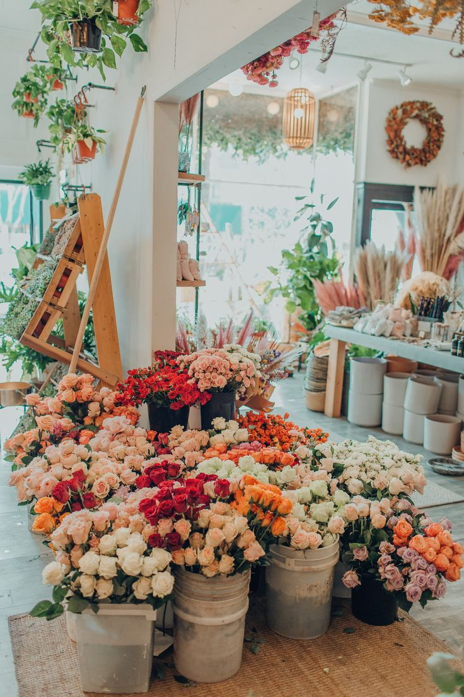
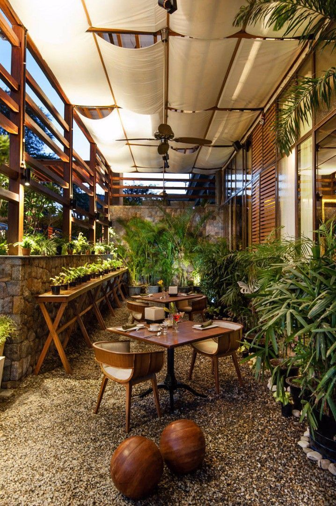

From meticulous planning to expert execution, we tailor our services to match your vision,
ensuring every detail is considered and executed to perfection.
With a commitment to quality, reliability, and customer satisfaction, we go above and beyond to exceed your expectations and bring your garden to life.
Trust us to cultivate your dream garden and enjoy the beauty of nature right at your doorstep.
Our Ambience

Step into our garden shop and immerse yourself in a haven of natural beauty.
Surrounded by lush greenery and vibrant blooms, our ambience is a tranquil oasis that invites you to connect with the essence of nature.
The gentle rustling of leaves, the sweet fragrance of flowers create a harmonious symphony that transforms your shopping experience into a serene escape.
Whether you're a seasoned gardener or just beginning to cultivate your green thumb, our carefully curated ambience provides the perfect backdrop for exploring a diverse array of plants,
gardening essentials, and inspiration to transform your outdoor space.
Coffee Corner

The perfect pairing! Coffee and plants. Our plant shop offers not just a sanctuary for botanical enthusiasts but also a cozy nook to savor a delightful cup of coffee.
Imagine enjoying your favorite brew amidst the soothing rustle of leaves and the aroma of fresh plants.
Our coffee corner is a charming space designed to complement your plant-shopping experience-a place to unwind, gather inspiration, and chat with fellow plant lovers.
It's where the simple joy of nurturing plants meets the comfort of sipping a warm cup of coffee-a delightful blend of nature and relaxation that adds an extra layer of enjoyment to your visit.
Whether you're browsing our plant selection or simply seeking a peaceful moment, our coffee at the plant shop promises to elevate your experience and nourish both your love for plants and your appreciation for a good cup of coffee.
Fresh Flower Market

Each petal tells a story, inviting you to
celebrate life's moments, big and small. From elegant roses that whisper of romance to
cheerful daisies that embody joy, our curated selection reflects the diverse tapestry of
emotions.
As you carry your floral treasure, let the harmonious symphony of coffee and
flowers guide you through a sensory journey that uplifts your spirit and warms your heart.
Our dedicated team of florists curates each arrangement with care and creativity, ensuring that
every bouquet is a masterpiece of natural artistry. From classic roses to exotic orchids, from delicate
lilies to vibrant sunflowers, our market celebrates the diversity and abundance of the floral world.
Gardening Tools

Elevate your gardening experience with a selection designed to cater to both novice plant enthusiasts and seasoned gardeners.
From durable hand trowels and pruners to advanced irrigation systems and soil enhancers, we offer a diverse range of tools to meet your specific gardening needs.
Explore our collection of premium seeds, fertilizers, and plant care solutions, carefully curated to nurture your plants and foster a thriving garden.
Visit our shop and embark on a journey of growth and beauty with the finest gardening tools and products.